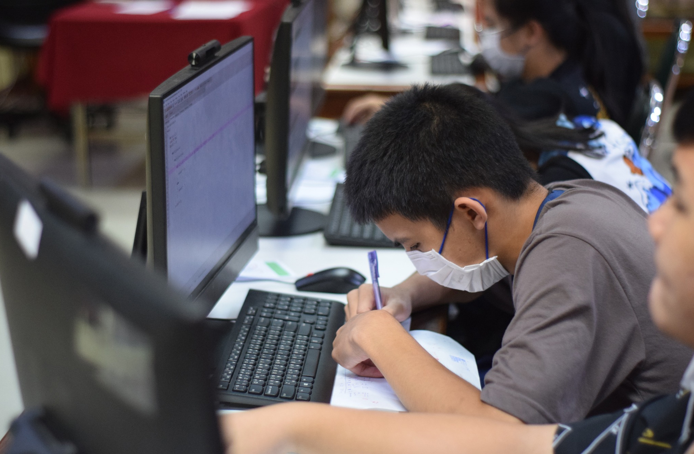
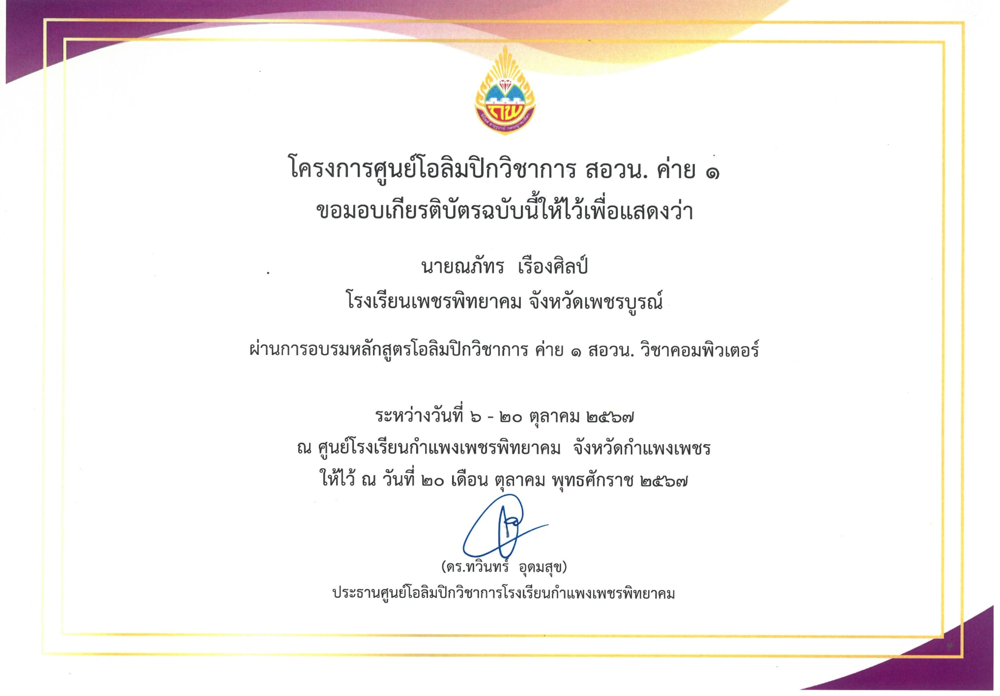
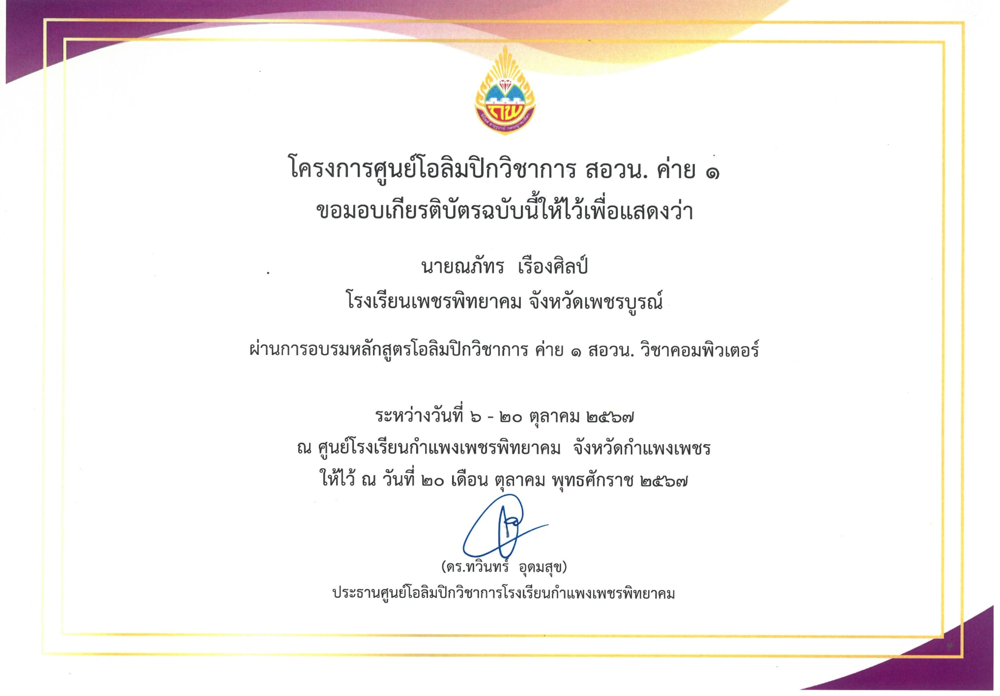

โอลิมปิกวิชาการ สอวน. สาขาคอมพิวเตอร์ค่าย 1-2
เรื่องราว story
ค่าย 1
สอวน. เป็นคำที่ผมได้ยินบ่อยมากในโรงเรียนของผมทั้งจากคุณครูและเพื่อนๆผมเกิดความสงสัยว่า สอวน.มันคืออะไร? ด้วยเหตุผลนี้ผมตัดสินใจท้าทายตัวเองโดยการไปสอบสอวน.และผมสามารถผ่านค่าย1ไปได้ผมเริ่มมีแรงบันดาลใจในการเรียนรู้ ผมเริ่มตั้งเป้าในการผ่านขึ้นไปยังค่าย 2 แต่ผมก็ต้องเผชิญกับความท้าทายเพราะว่าความรู้ที่ผมมีในตอนนี้นั้นเมื่อเทียบกับทุกคนในค่ายแล้ว ผมยังถือว่าอ่อนประสบการณ์อยู่มากซึ่งนั้นไม่ใช่ปัญหาสำหรับผมเพราะผมพร้อมที่จะเรียนรู้อะไรใหม่ๆจากคนรอบข้างอยู่เสมอผมมีเวลา 13 วันก่อนที่จะสอบเข้าค่าย2 และยังมีการสอบเก็บคะแนนในอีก 7 วัน แต่ด้วยเวลาที่มีจำกัดผมแอคทีพตัวเองให้ได้มากที่สุดผมใช้เวลาที่มีอยู่ให้คุ้มค่ากับการเรียนรู้ทั้งการเรียนรู้ด้วยตัวเองและการรับความรู้จากคนรอบข้างทำให้ผมนั้นได้พัฒนา skill เป็นอย่างมากจนผมสามารถทำคะแนนในรอบสอบเก็บคะแนนไปได้ 420/500คะแนนและผมสามารถสอบผ่านไปยังค่าย2ตามที่ผมตั้งเป้าไว้ได้
 

เรื่องราว story
ค่าย 2
ผมสามารถผ่านขึ้นมาค่าย2ได้มันทำให้ผมรู้สึกว่าความพยายามที่ทำไปมันไม่เสียเปล่าเลยแต่การแข่งขันนี้ยังไม่จบเป้าหมายของผมสูงขึ้นเรื่อยๆ ผมตั้งเป้าว่าผมต้องเป็นผู้แทนศูนย์ต้องเป็น1ใน6คนจาก30คนให้ได้ ผมยังคงตั้งใจในการเรียนรู้เหมือนเดิมผมพยายามเรียนรู้จากเพื่อนๆที่เก่งๆแต่รอบนี้ผมไม่สามารถทำแบบเดิมได้เลย ผมเลยผมรู้สึกว่าเวลานี้ผมต้องพึ่งตัวเองเท่านั้นด้วยเนื้อหาที่ยากและตารางเรียนที่แน่น ผมไม่เข้าใจบทเรียนหลายๆเรื่องแต่ผมยังคงตั้งใจในการเรียนรู้เพราะผมคิดว่า "การได้รับโอกาสถ้าเราไม่ทำให้เต็มที่ก็เหมือนกับเราไม่เห็นค่าของมัน" และในที่สุดวันสอบคัดผู้แทนใช่แล้วผมทำข้อสอบได้แค่ 2 ข้อจาก 5 ข้อผมรู้สึกเสียใจน้ำตาคลอแต่ในใจก็รู้สึกว่า "ไม่เป็นไรอย่างน้อยเราก็ทำเต็มที่แล้ว" ผมกลับบ้านมาพร้อมกลับแรงบันดาลใจ และเป้าหมายที่แน่วแน่เหมือนเดิมผมมีเวลา 1 ปีกับการเข้าค่าย2อีกรอบ และเป็นโอกาสสุดท้ายของผมผมทำแบบที่เคยทำเต็มที่กับทุกอย่างจนมาถึงค่าย2อีกครั้ง แต่ครั้งนี้ไม่เหมือนเดิมผมเข้าใจเนื้อหาทุกเนื้อหาผมสามารถทำคะแนนได้เต็มในการสอบเก็บคะแนนรอบแรกและเสร็จเป็นคนที่ 2 ได้ และผมมีความมั่นใจขึ้นมามากเมื่อถึงวันสอบผมเดินเข้าไปในห้องสอบด้วยความมั่นใจและตื่นเต้นผมทำข้อสอบได้ทุกข้อแต่ผมได้ข้อละ 8 คะแนน รวมเป็น 40 คะแนนผมดีใจมากตอนเวลาจะหมดรู้สึกว่าคะแนนสูงพอสมควร และแล้วก็ถึงเวลาประกาศผู้แทนประจำศูนย์ปี 2024 ใจผมเต้นแทบจะหลุดออกมากรรมการได้ประกาศชื่อทีละคน คนที่1ผ่านไป คนที่2ผ่านไป จนไปถึงคนสุดท้าย ใช่แล้วคนสุดท้ายกลับไม่ใช่ผม ผมหวิดคะแนนไป1คะแนนมันยังเป็นความรู้สึกเสียดายที่ผมยังจำไม่ลืมแต่สุดท้ายผมก็เอาประสบการณ์มาพัฒนาตัวเอง ค่ายสอวน.ไม่ใช่แค่ที่ที่ให้ความรู้แต่เป็นที่ที่ทำให้ใครหลายๆคนได้สิ่งที่มากกว่าความรู้กลับไปสำหรับผม สิ่งที่ผมอยากขอบคุณกับสอวน.ที่สุดนั้นคือขอบคุณที่มอบจุดเริ่มต้นของเส้นทางสายโปรแกรมเมอร์ให้กับผม
Thank For Experience And Knowledge